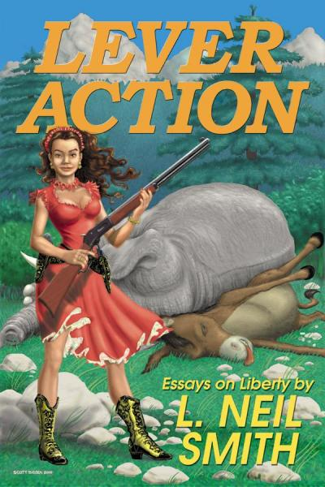

Front cover illustration © Copyright 2000 by Scott Bieser
Selected as the "Freedom Book of the Month for May 2001" by Free-Market.net
Lever Action
by L. Neil Smith
Published by:
Mountain Media
PO Box 271122
Las Vegas, NV 89127
email at vin@lvrj.comISBN: 0-9670259-1-5
Cover Design: Scott Bieser
Page Design: Kathy Harrer
I'm happy to announce the publication of my first nonfiction book, LEVER ACTION -- a collection of 20 years' worth of essays, columns, and speeches. The truth is, I'm as excited about this as I was when my first novel, The Probability Broach, was published.
A couple of years ago, I was surprised to discover that many more readers seem to know me for my short political writings than for the 23 novels that bear my name. Now, within the pages of LEVER ACTION, you'll have a chance to find out why.
Behind the wonderful, colorful, silly cover of LEVER ACTION -- another Scott Bieser masterpiece, and the best graphic ever to appear on any of my books:
You'll read "The American Lenin", a warm, fuzzy, loveable little article about Abraham Lincoln that for some reason never fails to start an international flame-war, whenever it's reposted on the internet.
You'll learn the horrible -- and hilarious -- fate that befell my junior high school principal, the very first "bedwetting liberal" I ever met.
You'll see what I did to Canada's leading political magazine when that scruffy little rag made the stupid mistake of calling me a racist.
You'll find out why I believe that science fiction may be a dying art -- and what can still be done about it.
And you'll remember, with me, what the great Robert A. Heinlein meant -- and continues to mean -- to all of us.
Along the way, LEVER ACTION will offer you my views on victim disarmament (I coined the term "Vermont Carry"), Ruby Ridge and Waco, Feinstein and Schumer, Republicans in general, smoking, Bill of Rights enforcement, social (and other sorts of) Darwinism, how I predicted the collapse of the Soviet Empire, why I knew that Y2K would never amount to anything, what it will take to make America fulfill its promise, and why I hate fast-food breakfasts.
At 463 pages, LEVER ACTION is a big, fat, soul-satisfying book containing dozens of items that will amuse, elate, and enrage at the same time. It's the very thing for all of those who are fed up with the pastel, puny, and pusillanimous pronouncements of established conservatism and libertarianism.
It's also an absolutely perfect gift to give to those on the left whose actuarial life-expectancies you're interested in shortening. (I haven't caused a stroke or A heart attack yet, at least that I can prove, but I keep on trying.) Buy it now and my wife, my daughter, and three figure-skating coaches will thank you.
You can get your cop(y/ies) of LEVER ACTION in three different ways:
[1] To order by phone, call (800) 244-2224. Our order-takers are standing by (9-5 Pacific time) to accept credit card orders, at $21.95 plus $3 postage and handling -- $6 for priority handling -- $24.95 or $27.95 total.
[2] To order by mail, send your check, money order, cash, or silver to:
Mountain Media
561 Keystone Ave. #684
Reno, NV 89503
Make checks payable to Mountain Media. The price, again, is $21.95 plus $3 postage and handling -- $6 for priority handling -- $24.95 or $27.95 total.
[3] To get a FREE copy, sign up for Vin Suprynowicz's terrific new newsletter, Privacy Alert. The charter-subscription fee is $72; LEVER ACTION is your premium for signing up. Send a check made out to Privacy Alert to:
Privacy Alert
561 Keystone Ave. #684
Reno, NV 89503
For multiple copies, the following discount schedule applies:
5-8 books: $17.50 ea.
9 or more books: $13.00 ea.
NOW ORDER L. NEIL SMITH'S LEVER ACTION ONLINE!
By popular request, you can now order my infuriating and funny collection of articles, essays, columns, and speeches directly online, from Amazon.com. Simply click on this link, or cut-and-paste it into your browser:
At 463 pages, LEVER ACTION is a big, fat, soul-satisfying book containing dozens and dozens of items that will amuse, elate, and enrage at the same time. It's the very thing for all of those who are fed up with the pastel, puny, and pusillanimous pronouncements of established conservatism and libertarianism.
Got an annoying brother- or sister-in-law? LEVER ACTION is also an absolutely perfect gift to give to those on the parasitical left whose actuarial life-expectancies you're interested in shortening. I haven't caused a stroke or a heart attack yet, at least that I can prove, but I keep on trying.
You can also order autographed copies of LEVER ACTION directly from the author. To make arrangements, send e-mail to me by clicking on:
Thanks for "listening",
L. Neil Smith